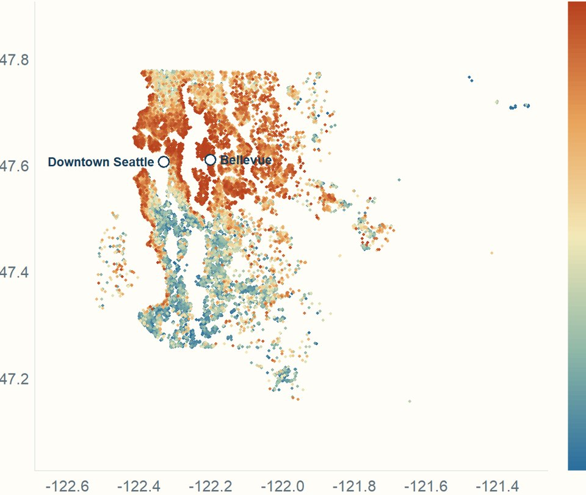

King County House Price Analysis
An end-to-end analysis of 21,613 house sales in King County, Washington (the Seattle area), written in R. It covers a data-quality audit, exploratory analysis, ZIP-code and location features such as distance to downtown Seattle and Bellevue, and seven models compared under both random and time-based splits. The tuned XGBoost model reaches R² 0.88 and a median absolute percentage error of about 8% on held-out sales, and SHAP values show what drives its predictions.
- R
- glmnet
- ranger
- XGBoost
- gbm
- SHAP